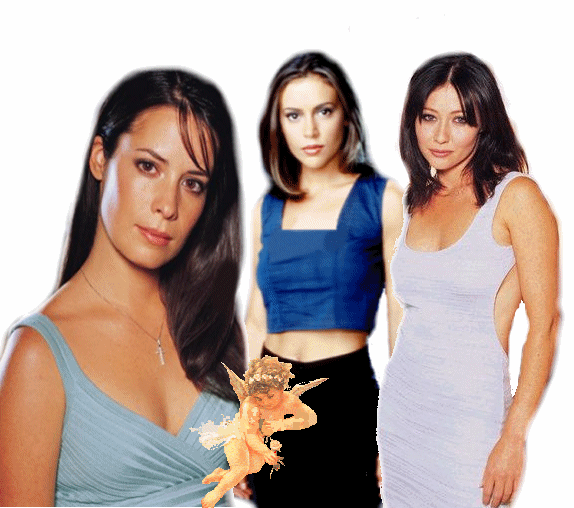

Charmed
Charmed is my favorite show. No matter what I will always love Charmed. Here is a description of Charmed:
The Halliwell sisters have their differences and
have definitely been known to be a tenacious threesome, but, could they be
witches? Real witches? Reunited in their late grandmother's Victorian home, the
three Halliwell sisters are mysteriously led into the attic, where they discover
The Book of Shadows. This book of witchcraft defines the role of the
Charmed Ones, three of the most powerful witches who will come together to
receive their powers on the night of a full moon.
With the full moon over their heads, the Halliwell
sisters descend the stairs from the attic and into the world of the
supernatural. If they are witches, then they need to learn about their newly
acquired powers, and they need to learn fast. According to legend, warlocks and
demons feast on the powers and lives of good witches. They need to face the
truth to survive.
Prue (Shannon Doherty), Piper (Holly Marie Combs) and
Phoebe (Alyssa Milano) star as the three sisters who are as different as night
and day. Yet sibling rivalry takes a back seat to the power these three can
conjure up together. Could they be the Charmed Ones? Tune in and find out.
This bewitching series is from Spelling Television and
was created by Constance M. Burge. Aaron Spelling and E. Duke Vincent serve as
executive producers along with Burge. It airs on Thursdays at 9:00 pm on the WB.
This show has so many exciting points and it makes you want to jump up from your seat and try to help them discover things. I have watched every episode and I still get nervous when I watch it again. If you love suspense, drama, love for family, and many other things Charmed is the show to watch.


http://homes.acmecity.com/charmed/witch/81/
Links:
All About Me